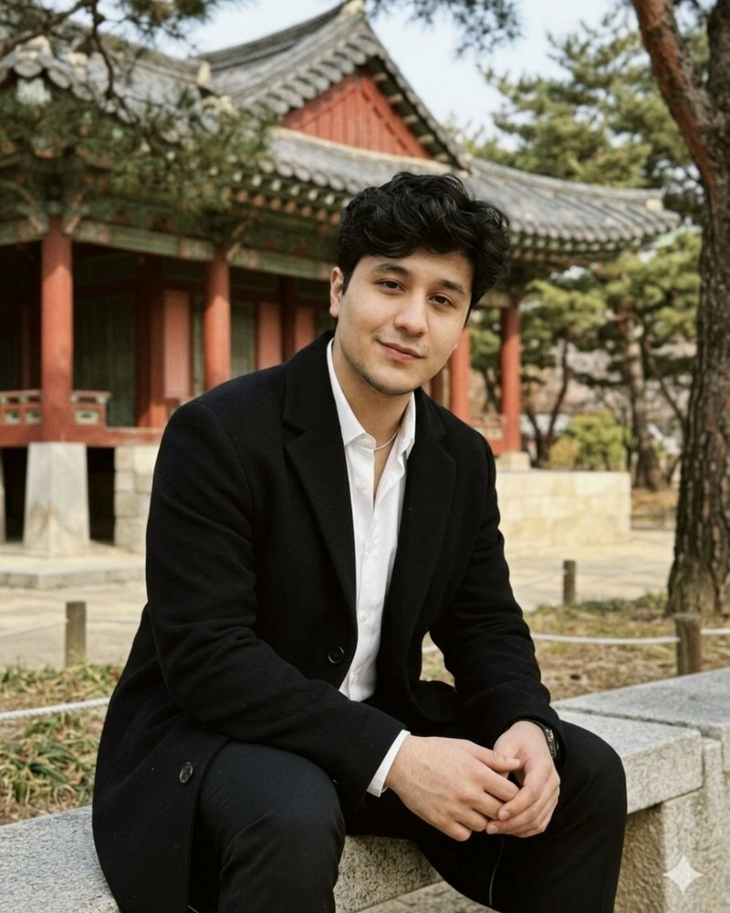

Games
- Clash of Clans
- PUBG
- Counter-Strike 1.6
Business-minded. Finance-focused. Technology-driven. Entrepreneurial.

I am a business student at Sejong University in Seoul, originally from Uzbekistan. My work sits where business, financial markets and technology meet.
I was born in 2004 in Namangan Province, Uzbekistan, and grew up learning mathematics and English, two subjects that still shape how I think about numbers, markets and the wider world.
I study how markets move, practise trading with discipline, and build software to understand and automate what I learn. Alongside my studies I train regularly, because a clear mind and a steady routine are part of the work.
Two ideas drive my long-term vision. Nay Corporation is a long-term business ambition, while TADOW AI is now in development, beginning with an AI assistant on this website. I will share verified progress as the project grows.
This website is a record of that journey. It separates what I have completed, what I am building now, and what I plan to do next.
To build meaningful ventures, create innovative solutions and establish a lasting international presence.
Studying how companies are built and run, and testing business ideas with small, honest experiments.
Financial markets, trading research and analysis, with an emphasis on risk management and long-term consistency.
Programming and automation in Python, and applying artificial intelligence to practical financial problems.
School No. 30, Namangan Province, Uzbekistan
School No. 30, Namangan Province, Uzbekistan
School No. 30, Namangan Province, Uzbekistan
Graduated with a high score.
Applied in spring and was accepted. Arrived in South Korea on September 19.
Sejong University, Seoul, South Korea
The music that keeps me focused while I study markets and build ideas. This is the playlist I come back to most.
Open on SpotifySololearn certificate of completion · ID: CC-ZUKHEOX7 · December 2025
Theoretical and practical understanding of machine learning fundamentals.
Udemy certificate of completion · 74 hours · November 2026
Instructors: Keehwan Kim, Korean Studio.
Udemy certificate of completion · 6.0 NASBA CPE credits · February 2023
Online self-study course in finance.
Each project shows its real status. Completed work will be added here as it is finished.
A professional digital identity built with HTML, CSS and JavaScript, hosted on GitHub Pages.
In progressA planned Python project to analyse forex market data and explore trading ideas with AI for learning and research.
PlannedAn AI platform in active development, beginning with this website assistant.
In progressThe goal is a long-term life built on markets, technology and steady skill-building, with a reputation that comes from real work.
For collaboration, questions or opportunities, reach out through any of these channels.